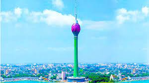
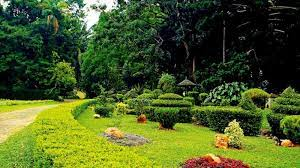

National Museum of Colombo

The National Museum of Colombo, also called the Sri Lanka National Museum, is the official museum of Sri Lanka and takes you on a journey over the thousands of years of Sri Lankan culture. It's one of those museums that has multiple types of media, from artwork to artifacts, as well as clothing, jewelry, coins, arms, and craftwork. The displays show both the cultural and natural heritage of the country, presented chronologically, starting with pre-history and leading to the present day. Give yourself a few hours to fully explore the collections. The museum is housed in a grand Victorian colonial building in central Colombo near Viharamahadevi Park.
National Zoological Gardens of Sri Lanka

The city's large Colombo Zoo is located in the Dehiwala area. More than just animals in cages, the zoo focuses on education, as well as animal conservation and welfare. One of the oldest zoos in Asia, it hosts almost 3,000 different animals of all shapes and sizes. The zoo has daily demonstrations with keepers of various animals. There is one for the zoo's friendly sea lion, one in front of the elephant enclosure, a bird presentation, and one on snakes. The zoo is open seven days a week, from 8:30am to 6pm. In addition to the urban zoo in Dehiwala, about two hours outside of Colombo, in Pinnawala, there is a larger wildlife park and an elephant sanctuary, both operated by the Department of Zoological Gardens.
Gangaramaya Temple
This Buddhist temple complex was constructed in the late 19th century. The temple is a place of worship but also looks to educate people about Buddhism. It's also like a museum, as it showcases a lot of physical items, from jewelry to coins and even a vintage Rolls-Royce. You can also view the temple's most sacred religious relic, a lock of the Buddha's hair, as well as a sacred tree around which the temple was built. Visit during the February full moon (called "Poya") to see the Gangaramaya Temple's annual religious ceremony, which includes a procession led by the temple's elephant. The temple complex is in central Colombo not far from Bere Lake.
Lotus Tower
One of the coolest places to visit in Colombo is also one of the city's newest attractions. The Colombo Lotus Tower is South Asia's tallest freestanding structure (368 meters/1,168 feet), and a trip to the top rewards visitors with unobstructed views across Colombo and the surrounding cityscape and sea. The tower, which houses a lot of telecommunications equipment, has a telecom museum, a shopping mall, a revolving fine dining restaurant, a hotel, and indoor and outdoor observation areas. The tower is also a sight to see from the outside - it's covered in LED lighting and presents seasonal themed lighting displays each night. The Lotus Tower, designed to replicate a lotus bulb and flower, simultaneously represents the historic culture of the country and its focus on the future.
Kelaniya Raja Maha Vihara
Kelaniya Raja Maha Vihara is one of the most prominent Buddhist temples in Sri Lanka. With more than 2500 years of history to it, this is the place Lord Buddha visited along with 500 monks invited by king Maniakkhikha. The location at which Buddha stood and preached is marked by a stupa. It is the perfect place to come face to face with Buddha’s life in the form of beautiful paintings and the artifacts like utensils and gen studded throne that belonged to him. You will also marvel as the 18 foot stone statue of Avalokiteshvara found here.
Gampaha Botanical Garden
After the construction of the Henarathgoda railway station, a botanical garden was also established with the name Henarathgoda Botanical Garden. In Sri Lanka, the first rubber tree was planted here and is still present in the town. The first seed was planted by the original owner, Muhandiam Amaris De Zoysa. He donated a major portion of this estate for public use to enhance the look of local surroundings. Due to the growing popularity of the town, the garden is also known as Gampaha Botanical Garden. If you are planning to explore this town then this garden is the must-visit place in Gampaha. Explore different species of flowers in this garden.
Kalutara Bodhiya
A sacred religious site of the Buddhism religion, Kalutara Bodhiya remains a must visit the location where Buddhists seek to visit at least once in their lifetime. Buddhists from around the world venerate this sacred place to involve in the special prayers upon their arrival. They keep worshipping at this place beside their involvement in the offerings at the Kalutara Bodhiya or the Bodhi Tree which is believed to exist since 2nd century BC. According to the Buddhist belief, it is one out of the 32 Jaya Sri Maha Bodhi saplings. That is why it remains a sacred location where Kalutara Viharaya Buddhist Temple and also famous Kalutara Chaitya Stupa nearby sacred fig turns this location venerated for the visitors.
Asokaramaya Buddhist Temple
Buddhism religion has close connectivity with the island nation Sri Lanka. As this country houses several sacred religious sites including the famous Asokaramaya Buddhist Temple, large chunk of devotees keep flocking here every day. This sacred religious site is located in the northern side of Kalutara. The main purpose to build this temple in 1870s was to shelter the Aluthgama Sangharatne disciples who used to gather at this spot for hearing sermons of the Buddhist monks. The temple has witnessed tremendous expansion over the centuries. It has become a mandatory visit in the itineraries of Buddhist travelers coming on the Sri Lankan trip.
Kalutara Beach

Sri Lanka is known for its finest beaches. Kalutara Beach comes in the list of select few best beaches in the world. As it is located at a distance of just 40 kilometers from the capital city Colombo, it is easily accessed by the visitors every day. This sandy beach remains filled with the tourists who enjoy in leisure here. Scenic view of this beach in the northern side or Mahawaskaduwa appeals more compared to its Katukurunda or southern side. As this beach is still not spoilt too much, it remains a popular landmark for the tourists delving into the fun activities.